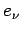
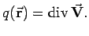
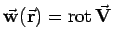

Inhalt Index DeskTop Bronstein

 Vektoranalysis und Feldtheorie Berechnung von Feldern Superposition von Feldern
Vektoranalysis und Feldtheorie Berechnung von Feldern Superposition von Feldern


Wenn die Quellen über Linien, Flächen oder räumliche Bereiche kontinuierlich verteilt sind, dann treten an die Stelle der endlichen Ergiebigkeiten  infinitesimale, die der Dichte der Quellverteilung entsprechen, und an die Stelle der Summen Integrale über die Quellbereiche. Im Falle einer stetigen räumlichen Verteilung der Quellergiebigkeit ist die Quelldichte  Ähnliches gilt für das Potential eines durch Wirbel erzeugten Feldes. Im Falle einer stetigen räumlichen Wirbelverteilung ist die Wirbelflußdichte durch  festgelegt.